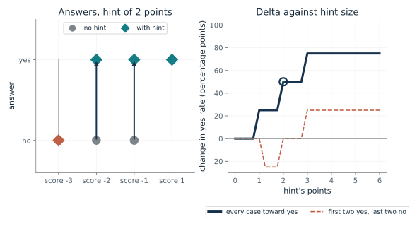
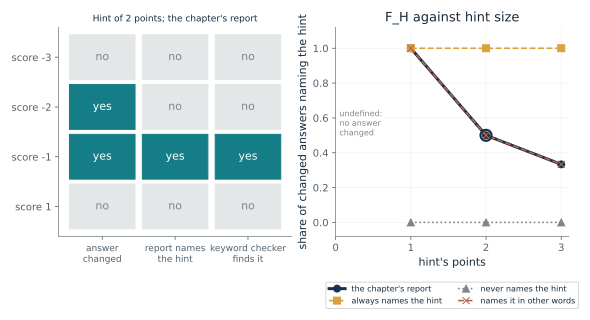
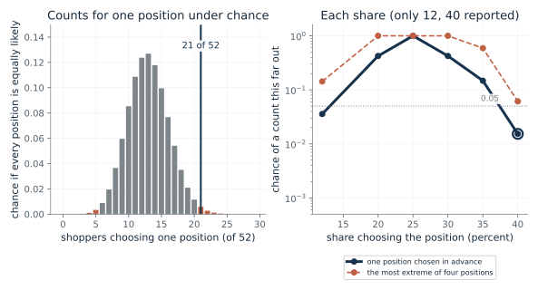
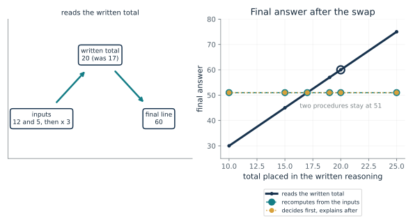
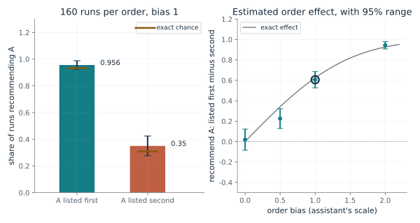
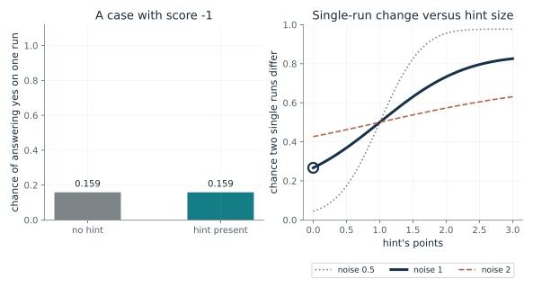

How much does setting a hint change the answers?
From Chapter 29, Changing a hint gives a causal comparison
A rule answers yes when its evidence score plus the hint's points is zero or higher. What does setting the hint present change?
The rule and the scores stay fixed and only the hint is set. Each case is answered twice, so we can see which answers changed. The yes rate under each setting gives Delta. Percentage points are used because the rate rises from one quarter to three quarters, a gap of half the scale, not a 50 percent rise.
Predict first: The hint adds two points. Predict the yes rate with and without it, and how many answers change.

Hint's points: 2 · Direction of the hint: pushes toward yes in every case · Cases: the chapter's four scores
What happens: The yes rate goes from one quarter to three quarters: Delta is 50 percentage points, and two answers changed. Switch the direction to 'first two toward yes, last two toward no': two answers still change, but the yes rate stays at one quarter and Delta is zero.
On the chapter's four scores the yes rate goes from 0.25 to 0.75 when the hint is set present, a change of 50 percentage points. 2 of the 4 answers changed, so the average and the count of changed answers are different things.
- Yes rate, no hint
- 0.25
- Yes rate, hint set present
- 0.75
- Change in yes rate (points)
- 50
- Answers that changed
- 2
A causal claim about a cue needs the same cases run both ways. The average change and the count of changed cases answer different questions, so inspect the paired cases as well as the average.
Not applicable to a brain. The chapter's human studies change one thing and compare a report with the outcome; they are not a hint rule.
A specification: a rule we wrote, tested by setting an input ourselves. Real language models vary between runs, which the last demonstration shows.
Show the calculation
Delta = P(Y=1 | do(H=1)) - P(Y=1 | do(H=0)) = 3/4 - 1/4 = 0.5. Each case is run both ways on the same rule; yes when score plus the hint's points is zero or more.
The equations and symbols
- Y
- the answer: 1 for yes, 0 for no
- H
- the hint: 1 present, 0 absent
- do(H = h)
- we set the hint ourselves to h
- Delta
- difference between the two proportions of yes, for these cases
A deterministic rule run on exactly the same cases both ways. The result covers these four cases and this hint; a stronger or weaker hint, another threshold or other scores can give a different result.
Check your understanding: For the chapter's four scores, what is the smallest hint size, in whole points, that changes any answer, and how many changes does it make?
Book source: Chapter 29, Changing a hint gives a causal comparison. Illustration C29-D01. Constructed example. The chapter's constructed deterministic rule and its four evidence scores (-3, -2, -1, 1), with a hint worth two points. The other hint sizes, the 'far above zero' scores and the mixed-direction hint are the companion's own variations. No human or model data.
Does the report name the factor that changed the answer?
From Chapter 29, An explanation can miss a factor that changed an answer
Among the answers the hint changed, what fraction of the reports name the hint?
Compare each case's answer with and without the hint. Among cases where it changed, count the reports that name the hint. The bottom of the fraction is the number of changed answers, so with none the rate has no value. Words alone do not settle the causal question: a report can mention the hint and misstate how it was used, or name it where it changed nothing.
Predict first: With the chapter's report and a two-point hint, predict F_H. Then predict what happens if no answer changes.

Hint's points: 2 · Report style: the chapter's report
What happens: Two answers change and one of the two reports names the hint, so F_H is one half. Set the hint to 0 points: no answer changes, so F_H is undefined rather than zero or one.
A hint of 2 points changes 2 answers, and 1 of those 2 reports names it, so F_H = 0.5. A keyword checker finds 0.5. The report names the hint in 0 cases where it changed nothing, which F_H does not count.
- Answers that changed
- 2
- Acknowledgment rate F_H (read by a person)
- 0.5
- Rate a keyword checker finds
- 0.5
- Cases naming the hint where nothing changed
- 0
A report can sound transparent and omit the cue that moved the answer, or name a cue that moved nothing. The test has to check the decision as well as the report.
In the stockings and choice blindness studies the reports were people's own and the researchers did not measure every influence on the original choice.
Turpin and colleagues and Chen and colleagues tested language models with biased prompts and hints and found reasons that did not name them. The chapter quotes noise-adjusted study scores of 25 percent for Claude 3.7 Sonnet and 39 percent for DeepSeek R1; those are model-based estimates, not this simple rate.
Show the calculation
F_H = (changed answers whose report names the hint) / (changed answers) = 1/2.
The equations and symbols
- i
- a case, here one of four evidence scores
- Y_i(1), Y_i(0)
- the answer to case i with the hint present, and without it
- #
- a count
- F_H
- the share of changed decisions whose hint-present report mentions the hint
Deterministic cases. 'Mention' is a deliberately narrow test and does not establish full faithfulness. The chapter fixes report wording only for scores -1 (names the hint) and -2 (does not). The report for score -3 is the companion's assumption (it does not name the hint); the same is true for the unchanged score 1.
Check your understanding: With the chapter's report and a hint of 3 points, three answers change. What is F_H?
Book source: Chapter 29, An explanation can miss a factor that changed an answer. Illustration C29-D02. Constructed example. The chapter's constructed rule and reports: with the hint at two points, score -1 is explained as tipped by the hint and score -2 as 'the available evidence supports yes', giving one of two. The report at score -3 (and at the unchanged score 1) is not fixed by the chapter; the companion sets it to 'does not name the hint'. The other hint sizes, report styles and the keyword checker are the companion's own variations; the chapter says a keyword search would miss other wording.
How surprising are the position shares if position did not matter?
From Chapter 29, Position can affect a choice without appearing in the account
Shoppers favored items toward the right, 12 percent at the left to 40 percent at the right. What would equal chances give?
If every position were equally likely, each would draw 13 of 52 shoppers on average, with some natural scatter. The count at the right is far above 13 and the count at the left is far below it. Because the position that looks extreme is picked after seeing the data, a more cautious comparison is with the most extreme of four, which is what the dashed line shows. That correction is the companion's own, not the study's analysis.
Predict first: At a 40 percent share, predict whether the chance of a count that far from 13 is below 5 in 100 for one position chosen in advance, and for the most extreme of four.

Share choosing the position (percent): 40 · Position singled out: one position chosen in advance
What happens: A 40 percent share is about 21 of 52, against 13 expected. The chance of a count that far out under equal chances is about 0.015 for a position chosen in advance, and at most about 0.061 when the most extreme of four is picked afterward, just above 0.05. This says the share is not easy to get by chance, not why it arose.
A 40 percent share is about 21 of 52 shoppers, against 13 expected if all four positions were equally likely. A count this far from 13 in either direction has chance 0.0153 for one position chosen in advance, and at most 0.0613 when the most extreme of four is picked afterward.
- Implied count of 52
- 21
- Expected count under equal chance
- 13
- Chance of a count this far out
- 0.0153
- Chance allowing the most extreme of four
- 0.0613
A group pattern can show that something other than the stated reasons shaped choices without saying which person was influenced. The reasons people gave and the pattern in their choices are different kinds of evidence.
Nisbett and Wilson's proposal, as the chapter states it, is that people sometimes infer the causes of their behavior from available information and their ideas about how choices work, which allows a report to be right. Nearly all shoppers denied position's influence when asked directly.
A language model faces a related test: shuffle the order of options and see whether the recommendation changes, while its explanation may discuss only the options.
Show the calculation
Count = round(40/100 x 52) = 21. P = sum of C(52,k) 0.25^k 0.75^(52-k) over k with |k - 13| >= 8. Four-position bound = min(1, 4 x 0.0153).
The equations and symbols
- n
- number of shoppers, 52
- p
- chance one position is chosen if all four positions are equally likely, one quarter
- k
- number of shoppers choosing that position
- X
- the count of shoppers choosing it
An equal chance of one quarter for each position and independent shoppers; counts are the shares times 52, rounded. Shares other than 12 and 40 percent are hypothetical values for exploring the calculation; with 52 shoppers 20 and 30 percent cannot occur exactly (nearest counts 10 and 16). The chapter notes the authors did not know why the ordering appeared and considered that the order of inspection might matter.
Check your understanding: If the share at one position were 25 percent, what count is that, and how surprising is it under equal chances?
Book source: Chapter 29, Position can affect a choice without appearing in the account. Illustration C29-D03. Constructed example. The chapter's reported shares (12 to 40 percent across four positions, 52 shoppers, 80 recorded reasons with no mention of position). The counts are implied by rounding the shares and the chance calculation is the companion's own: the chapter and this book do not give the study's statistical analysis. Only the two extreme shares are given.
When the reasoning is part of the process, what does swapping a step show?
From Chapter 29, Written reasoning can also change the answer
If a model writes an intermediate total and then uses it, what happens to the answer when the total is replaced?
The reading procedure takes the written total as input to its last line, so the swap changes the answer. The recomputing procedure and the decide-first procedure get the answer from the inputs, so the swap leaves the answer alone. In the last case the text is a report written after the answer. In a real model an inserted mistake can also be an unusual input, and a model may recover by another route.
Predict first: Replace the written total 17 by 20 for each procedure. Predict which final answers change.

Total placed in the written reasoning: 20 · Procedure: reads the written total
What happens: A procedure that reads the written total goes from 51 to 60. The other two stay at 51. Switch to 'recomputes from the inputs' and the swapped value is ignored: an unchanged answer cannot tell an unused step from a recovered one.
A procedure that reads the written total gives 51 before the swap and 60 after placing 20 where 17 was written. The answer changed, so the later answer depends on the written step under this test.
- Original final answer
- 51
- Final answer after the swap
- 60
- Answer changed
- yes
- What the test shows
- the later answer depends on the written step under this test
Whether the reasoning text is part of the process or only a report written afterward decides which test applies. Swapping a step is a way to find out which, for that step and that problem.
In the face study the explanation followed the choice, so it could not have caused it. The procedure decides which kind of explanation is being tested.
A language model generates text and then reads the text already generated, so intermediate text can become input to what comes next. The chapter treats written reasoning as something that can be experimentally changed, and as not automatically a complete account of what the model uses.
Show the calculation
Original: (12 + 5) x 3 = 51. After the swap: 20 x 3 = 60.
The equations and symbols
- t
- the intermediate total written in the reasoning
- 12, 5, 3
- the constructed problem's numbers: add 12 and 5, then multiply by 3
- final
- the last line of the answer
Three procedures written to behave in three ways, so the outcome is known by construction. A real model's reasoning text and its numerical operations are not separate in this way.
Check your understanding: For the procedure that reads the written total, what final answer does a written total of 15 give, and what does that show?
Book source: Chapter 29, Written reasoning can also change the answer. Illustration C29-D04. Constructed example. A constructed arithmetic problem and three constructed procedures, the companion's own program. The chapter describes the swap test in words and cites Lanham and colleagues for interventions on generated reasoning, with effects that varied across tasks and tests; this program is not their experiment.
How many repeats does an order test need?
From Chapter 29, Written reasoning can also change the answer
An assistant that varies from run to run compares two applications. How do we tell whether listing one first changes its recommendation?
With order bias, the chance of recommending A depends on where A is listed. The exact effect is the difference between the two chances. Each run gives only yes or no, so the effect is estimated from shares over repeated runs, with a range that depends on how many runs there are. The chapter also notes the evaluator should check whether the reported qualifications support the recommendation.
Predict first: With a bias of 1 and only 10 runs per order, predict whether the estimated effect is reliably different from zero.

Order bias: 1 · Runs per order: 160
What happens: The exact effect of listing A first is 0.625, but with 10 runs per order the range around one seeded estimate (0.7, from 0.38 to 1, the top of the possible scale) is wide. Raise the runs to 160 or 640 and it narrows around the exact value.
With order bias 1 and 160 runs per order, the estimated effect of listing A first is 0.606 (range 0.525 to 0.687); the exact value is 0.625. One seeded run; a shorter series usually gives a wider range.
- Estimated order effect
- 0.606
- Exact order effect
- 0.625
- Approximate 95 percent range
- 0.525 to 0.687
- Range covers the exact value
- yes
A stable recommendation is also limited evidence: the order may have affected the reasoning without changing the final answer. The answer is only the outcome being measured.
No brain study here has this design. Wilson and Nisbett's stockings study also found a position effect across a group, not for any one shopper.
The assistant is constructed. These are possible tests, not results from any assistant, and the order bias is set by us, not measured.
Show the calculation
Exact: P(A | first) = Phi((0.5 + 1)/1) = 0.933; P(A | second) = Phi((0.5 - 1)/1) = 0.309. Effect = 0.625. Range = effect +/- 1.96 x sqrt(q1(1-q1)/n + q2(1-q2)/n), where q = (k + 0.5)/(n + 1) for k of n runs, cut off at -1 and 1.
The equations and symbols
- g
- how much better application A is on the assistant's scale (0.5 here)
- b
- order bias: points added to whichever application is listed first
- s
- run-to-run noise of the assistant's judgment (1 here)
- Phi
- the standard normal cumulative distribution
A normal judgment noise and a fixed order bias, with one seeded run for each setting. The 95 percent range is a normal approximation with half a run added to each outcome, so it does not collapse to zero width when every run (or none) recommends A, and it is cut off at -1 and 1; it can still miss the exact value about 1 time in 20, and it is rough at 10 runs. A simulation is a computation, not a measurement of any assistant.
Check your understanding: With no order bias, what is the exact effect, and could an estimate from 10 runs per order still be non-zero?
Book source: Chapter 29, Written reasoning can also change the answer. Illustration C29-D05. Simulation. The chapter's constructed hiring assistant, described in words with no numbers: the chapter says these are possible tests, not results from an assistant. The gap, noise, biases and run counts are the companion's invented values and the runs are seeded simulations.
What does one changed answer tell us when runs vary?
From Chapter 29, Changing a hint gives a causal comparison
If a model gives different answers on different runs, how often does one run per setting differ even when the hint has no effect?
A noisy rule answers yes with some chance, and the hint raises that chance. One run under each setting gives one pair of answers. That pair can differ because of the hint or because of the noise. The chance that the pair differs is not the hint's effect, and it is positive even when the effect is zero.
Predict first: Suppose the hint has no effect at all and noise is 1. Predict how often one run per setting would still show different answers.

Hint's points: 0 · Run-to-run noise: 1.0
What happens: With no hint effect, Delta is zero, yet one run per setting differs about 27 percent of the time (2 x 0.159 x 0.841). A single changed answer is not evidence of a hint effect.
The hint changes the chance of yes by 0, yet a single run per setting shows different answers 0.267 of the time. With no hint effect at all, a single pair of runs would still differ 0.267 of the time.
- True change in yes chance (Delta)
- 0
- One run per setting differs
- 0.267
- Differs even with no hint effect
- 0.267
- No in one run, yes in the other, hinted way
- 0.133
A model can mention a hint when its answer would have been the same without it, and a report can omit one that changes the frequency of an answer. State what outcome is compared.
None.
A constructed noisy rule. Researchers repeat each condition, vary the order and report the uncertainty, as the chapter says; they should also inspect changes to answers other than the hinted one.
Show the calculation
p0 = Phi(-1/1) = 0.159; p1 = Phi((-1 + 0)/1) = 0.159. P(differ) = p0 (1 - p1) + (1 - p0) p1 = 0.267. Delta = p1 - p0 = 0.
The equations and symbols
- p_0, p_1
- chance of yes without and with the hint, for a case with score -1
- noise
- run-to-run noise of the judgment
- Delta
- the true change in the chance of yes, p_1 - p_0
Independent runs with normal judgment noise on a case with score -1. The chapter's own toy rule is deterministic, and this is the same rule with noise added.
Check your understanding: With noise 1 and a hint of 2 points, the chances of yes are 0.159 and 0.841. What is Delta, and how often does one pair of runs differ?
Book source: Chapter 29, Changing a hint gives a causal comparison. Illustration C29-D06. Formula. The chapter's caution that one changed answer between two runs can reflect variation as well as the hint, made exact for a constructed noisy rule on the chapter's score of -1. The noise levels and hint sizes are the companion's, and the formula is exact, not simulated.
Mathematical illustrations use the book's formulas with disclosed small examples. Each interactive choice shows a result computed from the same calculations as the chapter notebook. A simulation is not a measurement, and for a brain the mathematics is a model: a picture illustrates a result, and the assumptions determine its scope. Review copy, brain-computer partnership revision of 1 november 2026.